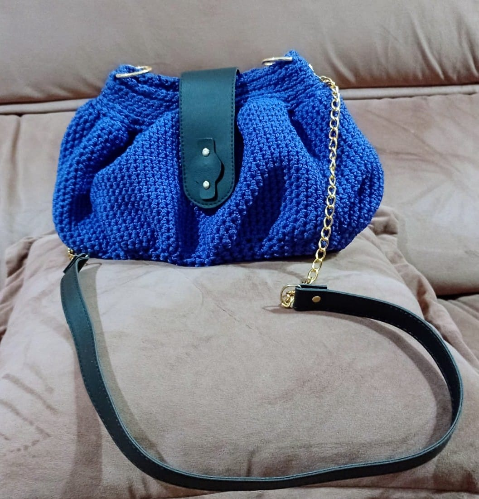
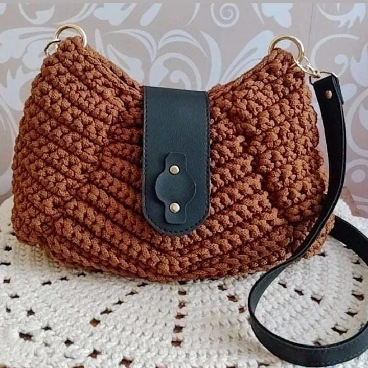
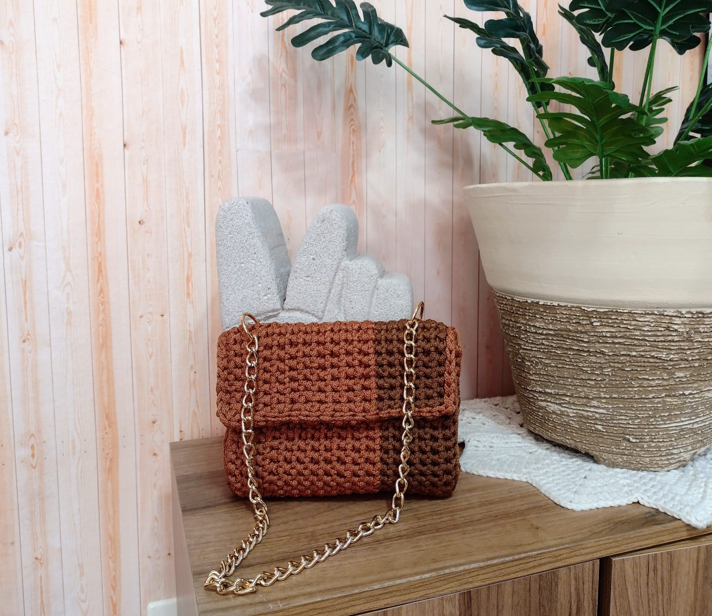
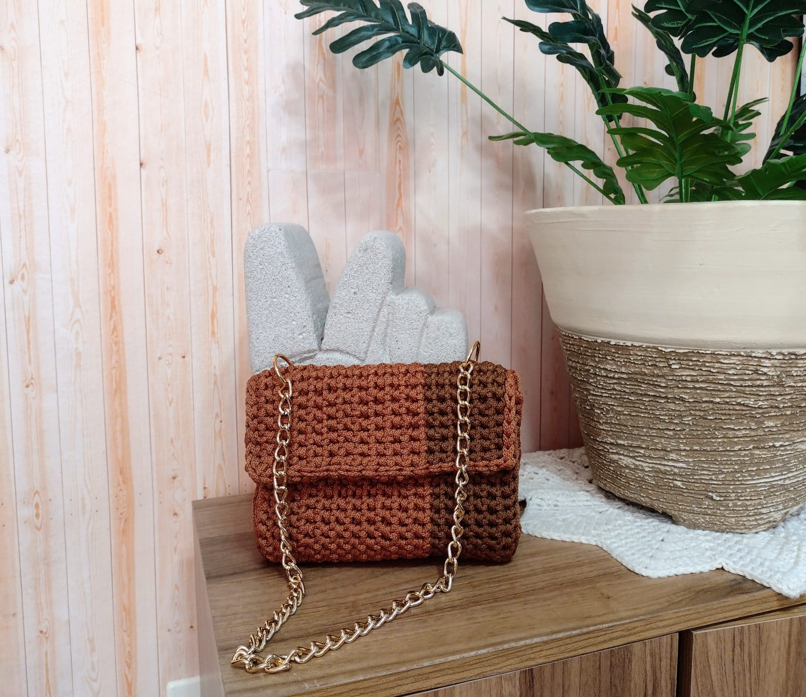

O fio composto por poliéster é bem suave e macio, possui uma leve elasticidade, e é muito resistente, uma delícia de tecer, esse material é de extrema qualidade, deixando a peça com um brilho único.
Outro benefício do fio poliéster é que ele é fácil de limpar. Ao contrário de outros materiais, como a lã, que podem encolher ou perder a forma quando lavados, o fio poliéster pode ser lavado sem problemas.
Bolsas de fio Poliéster:



 
